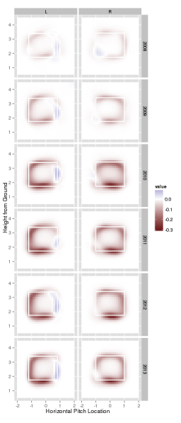

Strike-zone plots are all the rage recently. In fact, this paper was a Research Paper Finalists at the 2014 Sloan Sports Analytics Conference. In a nutshell, the paper shows evidence that the average home plate umpire’s decision to call a strike depends on more than pitch location alone (e.g., the current pitch count). As this Twitter conversation resonates, this is not a new idea. This paper also has 3D surfaces which is generally a bad idea for data visualization since it tends to obscure information.
To be specific, the Sloan paper examines the difference in the probability of a called strike (given the umpire has to make a ball/strike decision) at a specific location conditional upon different scenarios. For example, the authors found that when the classification is in question, the probability of a called strike is much lower if there are two strikes. This conclusion grasped the attention of a larger audience probably because it points out something we can all relate to and understand – human nature. According the results of this study, umpires exhibit mercy towards batters that are in danger of getting that dreaded “steeeerike” three call.
I’d like to piggyback off these findings, but ask a slightly more intricate question: “Are umpires becoming less merciful (or more robotic) over time?” As pointed out in this excellent article, there are rumors of umpires being replaced by machines. In actuality, new technology will probably aid decisions made by umpires, but won’t replace them. Regardless, umpires must be feeling pressure to make the right (unbiased) call – especially since the advent of PITCHf/x.
Without further ado, below is a figure showing the difference in the probability of a called strike in a two strike count versus a non-two strike count for each combination of batter stance and year. The red regions represent a higher probability when there are less than two strikes and blue regions represent a higher probability when there are two strikes.

The most striking result to me (no pun intended :) is the lack of red in 2008. In fact, contrary to my initial hypothesis, the red becomes more pronounced after the widespread adoption of PITCHf/x in 2008 (but peaks in 2010?). In some regions, the probability with two strikes is 0.3 lower than the probability with less than two strikes! It is also quite interesting that the difference in probability is roughly 0 when the pitch is thrown to the inside portion of the plate. Given these results, pitchers should be inclined to pick away at the inside corner when there are two strikes.
Although modeling the probability of a called strike is very common, the model used to create this kind of graphic can easily be altered to examine different responses. For example, it might be interesting to look at the probability of a home run/extra base hit/single/strikeout/etc under different scenarios. I think you will be suprised at how easy it is to create such visuals using pitchRx and mgcv. If you’re interested, I’ve included all the code used to fit the model and create the figure here.